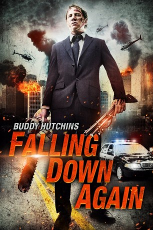

#6406 Buddy Hutchins
Alternativ: Falling Down Again (Originaltitel)
 
 IMDB-Wertung: 3.6 / 10
IMDB-Wertung: 3.6 / 10  Metascore: 0
Metascore: 0 
Der geplagte Pechvogel Buddy Hutchins (Jamie Kennedy) hat dem Alkohol nun schon seit einiger Zeit abgeschworen, sein Problem also im Griff. Doch seine Mühe zieht keine Belohnung nach sich. Seine Familie ist nur wenig beeindruckt von dem Erfolg. Während seine Ehefrau eine heimliche Affäre mit seinem Kumpel hat, fehlt seinem Sohn jeglicher Respekt vorm Vater. Das Fass ist voll, jeder weitere Tropfen könnte es zum Überlaufen bringen: Buddy ist eigentlich nur noch eine tickende Zeitbombe. Und die explodiert an einem besonders miesen Tag tatsächlich, als ihm seine Kinder weggenommen werden sollen, sich seine Karriere auf einem absteigenden Ast befindet und seine geliebte Mutter das Zeitliche segnet. Nun ist es an der Zeit für Buddy all diejenigen, die ihm etwas Böses wollen, zu bestrafen. Mit einer Motorsäge bewaffnet begibt er sich auf einen Rachefeldzug und kennt dabei kein Erbarmen.
Jahr: 2015
Dauer: 98 Minuten
FSK: 16
Land: USA Studio: Uncork'd EntertainmentTonspuren: DTS - ,
Untertitel:
Auflösung: 1080p (1920x808) Größe: 4157 MB
Genre: Thriller, Horror
Regisseur: Jared Cohn
Drehbuch: Jared Cohn
Soundtrack:
Darsteller:
 Jamie Kennedy als Buddy Hutchins
Jamie Kennedy als Buddy Hutchins Sally Kirkland als Bertha
Sally Kirkland als Bertha Sara Malakul Lane als Evelyn
Sara Malakul Lane als Evelyn- Steve Hanks als Troy
- Nicole Alexandra Shipley als Carol
- Demetrius Stear als Ryan
- Remington Moses als Stephanie
- Richard Switzer als Joel Hutchins
- Edward DeRuiter als Limmy
- Hiram A. Murray als Detective Hunter
- Erin O'Brien als Allison
- Samantha Stewart als Nurse Stephanie
- George Saunders als Attorney Styles
- Rebecca Rowley als Mandi
- Sam Osman als Wolf the Bounty Hunter
- Jeremy London als Random Parent
- Shaughnessy Dixson als Loan Officer
- Mike DiGiacinto als Paramedic
- Bill Devlin als Reporter
- HenRii Coleman als Ricky
- Daniella McBride als Theresa
- Matthew Arner als Himself
- Carl Baur als Attorney Wilkins
- Coty Galloway als Receptionist
- Milana Lev als Molly Hutchins
- David Gere als Don
- David Brite als Judge
- Jordyn Leaf als Beth
- Angie Scott als Angry Laundrymat Customer
- Chris Taylor Brown als Witness
- Valerie Taylor Brown als Witness
- Colin Chase als Officer Ortiz
- Harwood Gordon als Father Hutchins
- Hermann Ludovick Pattein als Officer LP
- Valerie Taylor als Witness
Datei: X:\2015(A-F)\Buddy Hutchins (2015, FSK16, 1920x808).mkv seit 20.06.2017
Festplatte: HD 2015(A-Z)
 Es gibt insgesamt 143 Filme in der Gruppe '2015(A-F)'
Es gibt insgesamt 143 Filme in der Gruppe '2015(A-F)'